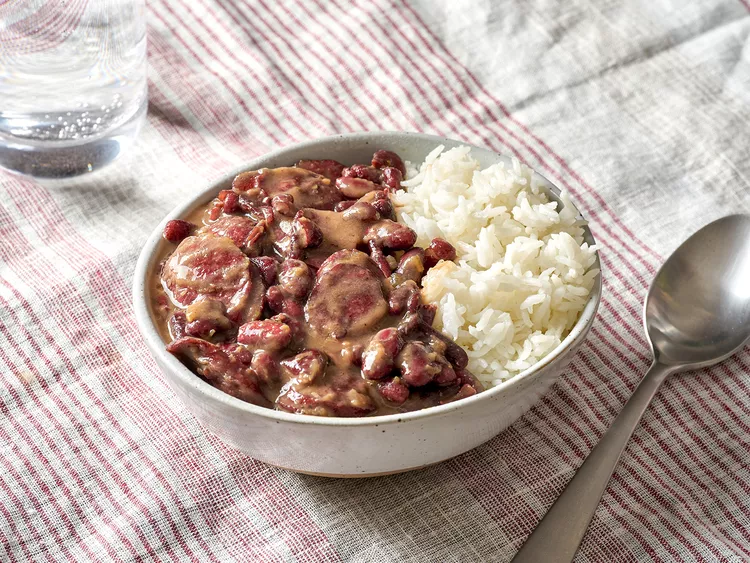

Home
Red Beans & Rice

Description
A Lousiana classic that's a staple in my family. My Papa was from the good ole boot
Ingredients
- 2 lbs Red Beans
- 3 cups Long Grain Rice
- 2lbs Beef Sausage
- 1 tbsp Unsalted Butter
- 9 cups Beef Stock
- 2 tbsp Worcestershire Sauce
- 3 Bay Leaves
- 3 Thyme Sprigs
- 7 Garlic Cloves (Minced)
- 2 Green Onions
- 1 White Onion (Diced)
- 1 Green Bell Pepper (Diced)
- 3 Celery Stalks (Diced)
- 1 tbsp Salt
- 1½ tbsp Black Pepper
- 2 tsp Garlic Powder
- 2 tsp Onion Powder
- 1 tsp Cayenne
- 1 tsp Cumin
Steps
- Prep all ingredients
- Heat butter and oil in pot on medium heat
- Sauté celery, onion, and bell pepper until sweated
- Add bay leaf, thyme, and garlic. Cook for about 15 sec just to spread the flavor.
- Sauté sausage and green onions in a separate pan. We just want to release that fat from the beef and let it fuse with the onion.
- Add sausage and beans to pot, then our beef stock.
- Bring to light boil and skim off the foam from the top.
- Cover your pot, reduce heat to a simmer, and let your beans cook for 1½ hours (stirring occasionally).
- Uncover and begin to smash (cream) beans on the side of the pot.
- Season your beans to your liking and ENJOY!